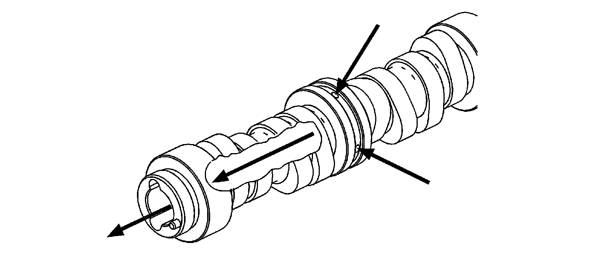
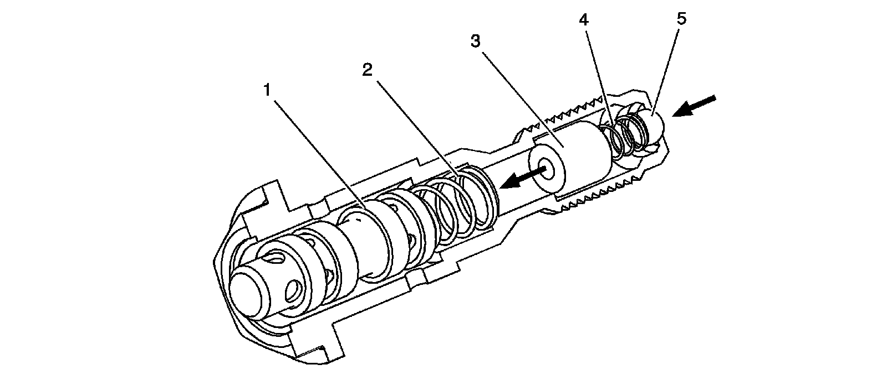
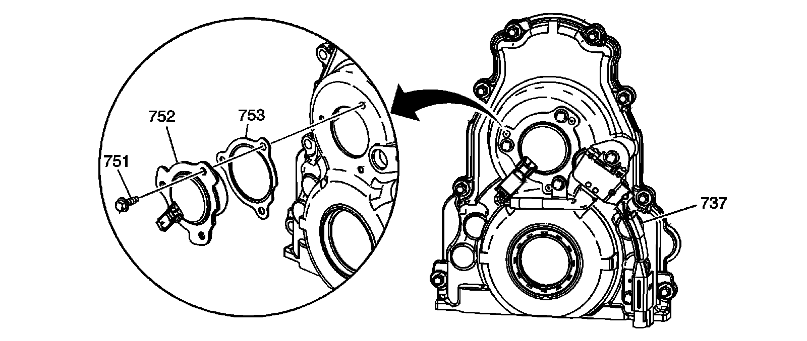
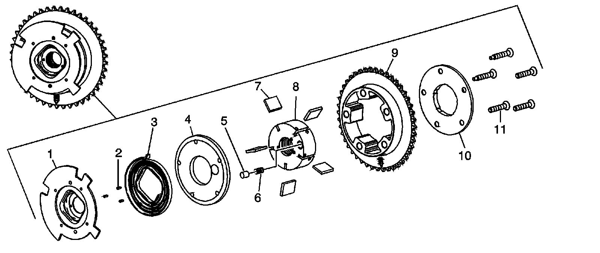

Camshaft: Description and Operation
Camshaft Position Actuator and Solenoid Valve Description
Camshaft

The camshaft is designed to provide a lubrication path for pressurized engine oil to flow to the camshaft position (CMP) actuator. Pressurized engine oil enters the camshaft at bearing journal location number 2. Oil travels through the camshaft, out the front, and into the CMP actuator solenoid valve.
Camshaft Position (CMP) Actuator Solenoid Valve

The CMP actuator solenoid valve consists of a housing, spool valve (1), spool return spring (2), oil filter (3), inlet check ball return spring (4), and inlet check ball (5). Pressurized engine oil enters the valve and travels through the filter to the spool. Spool position is controlled by the CMP magnet and engine control module (ECM). When the spool is moved to the proper position, oil flow is directed through the valve and into the CMP actuator assembly. The CMP solenoid valve is a torque-to-yield design and should be replaced each time it is removed.
CMP Actuator Magnet

The CMP actuator magnet (752) is located in the engine front cover and is sealed by a gasket (753). The CMP actuator magnet is controlled by a 12-volt pulse width modulated signal from the ECM. When energized, the solenoid uses electromagnetic force on the magnet pintle to position the spool valve of the CMP solenoid valve.
CMP Actuator

The CMP actuator is a vane type design that hydraulically changes angle or timing of the camshaft relative to crankshaft position. The CMP actuator allows earlier or later intake and exhaust valve opening during the 4-stroke engine cycle. The CMP actuator cannot vary the duration of valve opening or valve lift. The CMP actuator is to be serviced as an assembly. For system operation, refer to Camshaft Actuator System Description.
The CMP actuator consists of the CMP reluctor wheel (1), pins (2), return spring (3), front cover (4), locking pin (5), locking pin spring (6), vanes and vane springs (7), rotor (8), stator (9), sealing cover/thrust plate (10), and bolts (11).